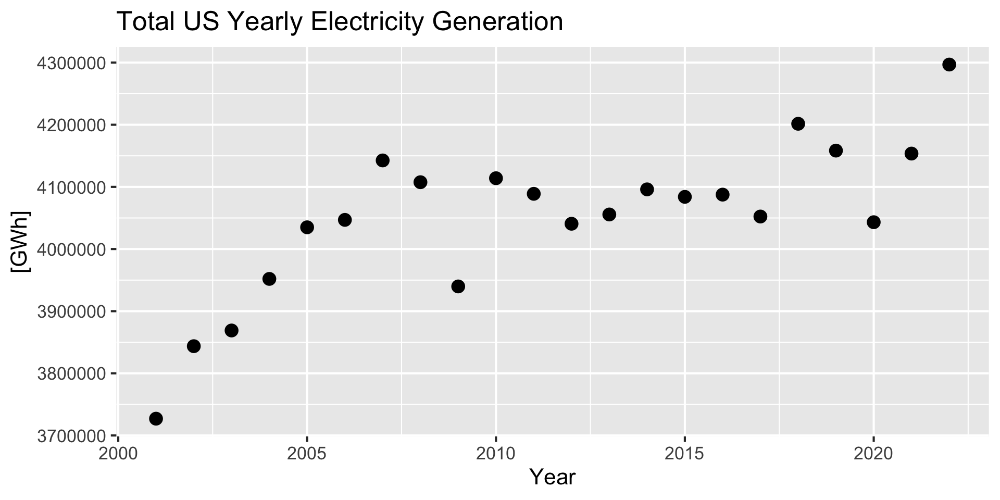
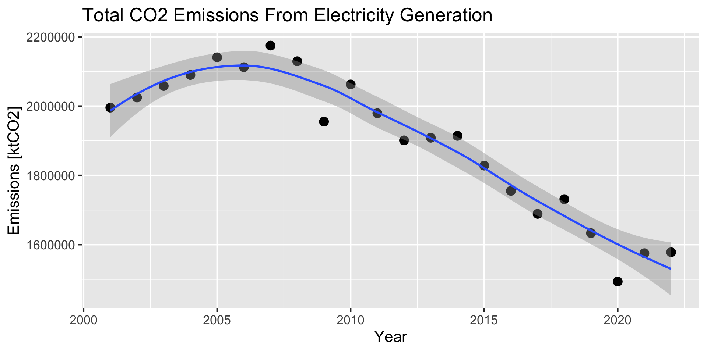
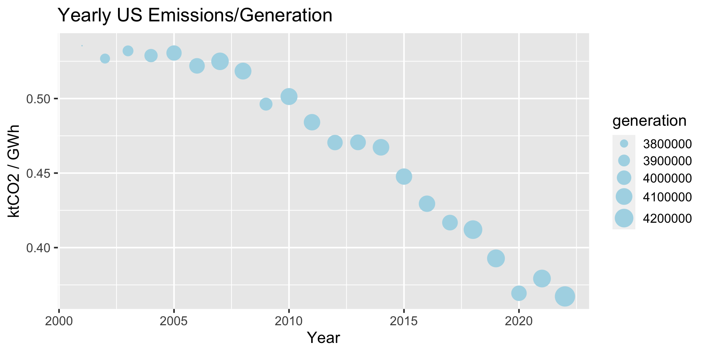

In this analysis I look at trends in US electricity generation and associated CO2 emissions, using a nice data set available from Ember. Ember provides monthly and yearly data on US electricity generation and emissions for the total US as well as by state, both in total and broken down by fuel types. In this first look at the data, I will limit my analysis to yearly data and total US generation/emissions.
Data
Data was downloaded from https://ember-climate.org/data-catalogue/us-electricity-data/ as a csv file and read into R. Some unnecessary columns were dropped, and the data is subsetted into separate data frames for total US generation and emissions.
Code
suppressPackageStartupMessages(library(tidyverse))library(gt)theme_set(theme_gray(base_size =16))# read yearly data# Data only contains USA, so we can drop country column and some other un-needed onesdf_yearly<-readr::read_csv('data/us_yearly_full_release_long_format-2.csv', show_col_types =FALSE)|>select(-c(Country,`Country code`,`State code`,`YoY % change`,`YoY absolute change`))# make separate dataframe for just Electricity generation data# This contains both actual generation (gWh) and % of total gen for each fuel typedf_gen_yearly_UStot<-df_yearly|>filter(Category=="Electricity generation")|>filter(Variable=="Total Generation")|>filter(State=='US Total')|>select(-c("State","State type"))|>rename(generation =Value)# make separate dataframe for just Power sector emissions data (not generation)df_emis_yearly_UStot<-df_yearly|>filter(Category=="Power sector emissions")|>filter(State=='US Total')|>filter(Variable=='Total emissions')|>rename(emissions =Value)
First I’ll look at the time series of US electricity generation (Figure 1). We can see that generation has generally increased over time, though it appears to have been relatively flat from about 2008-2017. There was a significant decrease in 2009 (possibly related to the 2008 recession), and also in 2020 (possibly related to the Covid-19 pandemic).
Code
df_gen_yearly_UStot|>ggplot(aes(Year, generation))+geom_point(size =4)+ggtitle("Total US Yearly Electricity Generation")+ylab("[GWh]")

Figure 1: Timeseries of yearly US electricity generation
Emissions
Next I’ll look at the time series of emissions from the power sector. Figure 2 shows that US power sector emissions were increasing up to about 2007, but have been steadily decreasing over time since then.
Code
df_emis_yearly_UStot|>ggplot(aes(Year, emissions))+geom_point(size =4)+geom_smooth(formula =y~x, method ="loess")+ggtitle("Total CO2 Emissions From Electricity Generation")+ylab("Emissions [ktCO2]")

Figure 2: Timeseries of yearly US emissions from electricity generation
Emissions vs Generation
So far we have sen that electricity generation has been generally increasing over time, while the associated CO2 emissions have been decreasing.
Figure 3 shows a scatter plot of total US yearly emissions vs electricity generation, with the color corresponding to the year. This shows a trend of decreasing emissions over time, even as generation has increased.
Figure 3: Scatterplot of total US yearly emissions vs electricity generation
An easier way to visualize this trend is to plot the emissions/generation (i.e the CO2 intensity) over time, shown in Figure 4. In this figure, the size of the points are also proportional to the value of generation.
Code
df_comb|>ggplot(aes(Year, emis_per_gen))+geom_point(aes(size =generation), color ='lightblue', alpha =1)+ylab("ktCO2 / GWh")+ggtitle("Yearly US Emissions/Generation")+scale_size(range =c(0,9))

Figure 4: Timeseries of total US yearly Emssions/Generation, sized by value of generation
Summary
Total electricity generation has continued to increase (Figure 1)
At the same time, total CO2 emissions from electricity generation have decreased (Figure 2)
The amount of Emissions per generation (i.e. carbon intensity) has decreased over time (Figure 4), likely due in large part to a combination of a transition from coal to natural gas, and an increase in renewable energy. In a future analysis I will further break down the data by fuel type to get a better understanding of what is driving this trend.
Further Exploration:
Some of the areas I plan to explore in continuing analysis of this data include:
Breaking down data by fuel types
Looking at monthly data
Examine correlation with weather/temperature
Looking for changes in seasonal patterns of energy generation associated with home electrification (e.g. electric heat pumps replacing gas furnaces).
Break down by individual states
SessionInfo
To make this analysis more reproducible, my SessionInfo is listed below.
---title: "Trends in US Electricity Generation and CO2 Emissions" author: "Andy Pickering" image: image.png format: html: code-link: true code-fold: show fig-width: 10date: "2023-11-19"categories: [energy, R, visualization]toc: true#bibliography: references.bibfreeze: autodraft: false---# IntroductionIn this analysis I look at trends in US electricity generation and associated CO2 emissions, using a nice [data set](https://ember-climate.org/data-catalogue/us-electricity-data/) available from [Ember](https://ember-climate.org/). Ember provides monthly and yearly data on US electricity generation and emissions for the total US as well as by state, both in total and broken down by fuel types. In this first look at the data, I will limit my analysis to yearly data and total US generation/emissions.# DataData was downloaded from <https://ember-climate.org/data-catalogue/us-electricity-data/> as a csv file and read into R. Some unnecessary columns were dropped, and the data is subsetted into separate data frames for total US generation and emissions.```{r data prep}#| code-fold: true#| suppressPackageStartupMessages(library(tidyverse))library(gt)theme_set(theme_gray(base_size =16))# read yearly data# Data only contains USA, so we can drop country column and some other un-needed onesdf_yearly <- readr::read_csv('data/us_yearly_full_release_long_format-2.csv', show_col_types =FALSE) |>select(-c(Country,`Country code`,`State code`,`YoY % change`,`YoY absolute change`))# make separate dataframe for just Electricity generation data# This contains both actual generation (gWh) and % of total gen for each fuel typedf_gen_yearly_UStot <- df_yearly |>filter(Category =="Electricity generation") |>filter(Variable =="Total Generation") |>filter(State =='US Total') |>select(-c("State","State type")) |>rename(generation = Value)# make separate dataframe for just Power sector emissions data (not generation)df_emis_yearly_UStot <- df_yearly |>filter(Category =="Power sector emissions") |>filter(State =='US Total') |>filter(Variable =='Total emissions') |>rename(emissions = Value)```## Generation Data```{r}df_gen_yearly_UStot |> gt::gt() |>opt_row_striping() |>opt_interactive(use_highlight =TRUE, page_size_default =5)```## Emissions Data```{r}df_emis_yearly_UStot |> gt::gt() |>opt_row_striping() |>opt_interactive(use_highlight =TRUE, page_size_default =5)```# Electricity GenerationFirst I'll look at the time series of US electricity generation (@fig-electricity-generation-timeseries). We can see that generation has generally increased over time, though it appears to have been relatively flat from about 2008-2017. There was a significant decrease in 2009 (possibly related to the 2008 recession), and also in 2020 (possibly related to the Covid-19 pandemic).```{r }#| label: fig-electricity-generation-timeseries#| fig-cap: "Timeseries of yearly US electricity generation"df_gen_yearly_UStot |>ggplot(aes(Year, generation)) +geom_point(size =4) +ggtitle("Total US Yearly Electricity Generation") +ylab("[GWh]")```# EmissionsNext I'll look at the time series of emissions from the power sector. @fig-emissions-timeseries shows that US power sector emissions were increasing up to about 2007, but have been steadily decreasing over time since then.```{r }#| label: fig-emissions-timeseries#| fig-cap: "Timeseries of yearly US emissions from electricity generation"df_emis_yearly_UStot |>ggplot(aes(Year, emissions)) +geom_point(size =4) +geom_smooth(formula = y ~ x, method ="loess") +ggtitle("Total CO2 Emissions From Electricity Generation") +ylab("Emissions [ktCO2]")```# Emissions vs GenerationSo far we have sen that electricity generation has been generally increasing over time, while the associated CO2 emissions have been decreasing.```{r Combine gen and emis data}df1 <- df_emis_yearly_UStot |>select(Year, emissions)df2 <- df_gen_yearly_UStot |>select(Year, generation) df_comb <- df1 |>inner_join(df2,by =join_by(Year)) |>mutate(emis_per_gen = emissions/generation)```@fig-emissions-vs-generation shows a scatter plot of total US yearly emissions vs electricity generation, with the color corresponding to the year. This shows a trend of decreasing emissions over time, even as generation has increased.```{r Emissions vs generation}#| label: fig-emissions-vs-generation#| fig-cap: "Scatterplot of total US yearly emissions vs electricity generation"df_comb |>ggplot(aes(generation, emissions)) +geom_point(size =5, aes(color = Year)) +xlab("Generation [GWh]") +ylab("Emissions [ktCO2]")```An easier way to visualize this trend is to plot the emissions/generation (i.e the CO2 intensity) over time, shown in @fig-emssions-per-generation-vs-year. In this figure, the size of the points are also proportional to the value of generation.```{r}#| label: fig-emssions-per-generation-vs-year#| fig-cap: "Timeseries of total US yearly Emssions/Generation, sized by value of generation"df_comb |>ggplot(aes(Year, emis_per_gen)) +geom_point(aes(size = generation), color ='lightblue', alpha =1) +ylab("ktCO2 / GWh") +ggtitle("Yearly US Emissions/Generation") +scale_size(range =c(0,9))```# Summary- Total electricity generation has continued to increase (@fig-electricity-generation-timeseries)- At the same time, total CO2 emissions from electricity generation have decreased (@fig-emissions-timeseries)- The amount of Emissions per generation (i.e. carbon intensity) has decreased over time (@fig-emssions-per-generation-vs-year), likely due in large part to a combination of a transition from coal to natural gas, and an increase in renewable energy. In a future analysis I will further break down the data by fuel type to get a better understanding of what is driving this trend.## Further Exploration:Some of the areas I plan to explore in continuing analysis of this data include:- Breaking down data by fuel types- Looking at monthly data- Examine correlation with weather/temperature- Looking for changes in seasonal patterns of energy generation associated with home electrification (e.g. electric heat pumps replacing gas furnaces).- Break down by individual states# SessionInfoTo make this analysis more reproducible, my *SessionInfo* is listed below.```{r}utils::sessionInfo()```